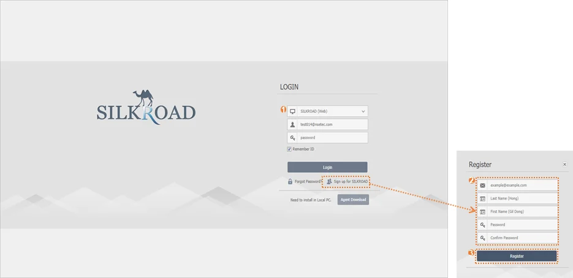
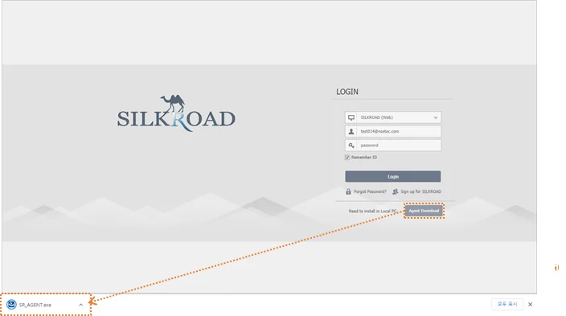

|
|
구분 | 명칭 | 설명 |
| Type | 사용자 계정 유형에 따라 ‘Web’ 또는 ‘LDAP’으로 구성 |
| Remember ID | ‘Remember ID’ 가 체크되어 있을 경우, 사용자 ID가 저장됨 |
| Forgot password? | SILKROAD 에 등록된 Web 계정 이메일로 임시 패스워드 전송 (LDAP 계정은 불가) |
| Sign up for SILKROAD | SILKROAD Web 계정 사용자 등록 |
| Agent Download | ‘SILKROAD Agent.exe’ 다운로드 버튼 |
SILKROAD에서 사용할 사용자 계정을 생성한다. ‘Sign up for SILKROAD’로 생성하는 계정은 ‘Web’ 계정으로 등록된다.
① 메인 화면에서 ‘Sign up for SILKROAD’버튼을 클릭한다.
② ‘E-mail’, ‘Last Name’, ‘First Name’, ‘Password’, ‘Confirm Password’의 내용을 입력한다.
③ ‘Register‘버튼을 클릭한다.
④ 회원 가입 양식에 문제가 없을 경우 계정 생성이 완료된다.
⑤ 가입한 이메일로 확인 메일이 발송된다.
 |
회원가입 시 작성하는 내용은 모두 필수 입력해야 한다. 중복된 이메일이 존재하거나 패스워드가 동일하지 않는 경우 계정 생성이 되지 않는다. 관리자 설정에 따라 신규 사용자 등록 시 관리자의 등록 승인을 필요로 할 수 있다. 승인 전까지 로그인이 제한되며, 승인 방법은 Admin 매뉴얼을 참고한다. Web 계정은 필요에 따라 관리자(계정권한:Admin, Super)가 생성할 수 있으며 Admin 매뉴얼을 참고한다. |
SILKROAD에 등록된 사용자 계정(Web 타입)의 비밀번호를 찾을 수 없을 때, 임시 비밀번호를 발급하여 로그인할 수 있다. 이메일, 사용자 이름을 기준으로 계정을 찾아 계정 등록 시 입력한 메일 주소로 임시 비밀번호를 메일 발송 한다.
① SILKROAD 메인 화면에서 ‘Forgot Password?’ 버튼을 클릭한다.
② ‘E-mail’, ‘Lase Name’, ‘First Name’를 입력한다.
③ ‘Find’ 버튼을 클릭한다.
④ ‘E-mail’, ‘Last Name’, ‘First Name’ 정보에 따라 임시 비밀번호를 이메일로 발송한다.
|
⑤ 임시 비밀번호를 발급받은 후 사용자는 임시 비밀번호를 사용하여 로그인한 뒤 Account의 Change Password를 통해 비밀번호를 변경해야 한다.
LDAP 계정의 패스워드는 사용자가 소속된 조직의 LDAP 서버와 연동되므로 SILKROAD에서 계정 패스워드를 변경할 수 없으며 LDAP 서버 비밀번호 변경 시 자동으로 변경된다. 따라서 내부 서버 관리자가 별도로 비밀번호를 바꿔주거나 새롭게 지정해주어야 한다. |
Agent는 SILKROAD 내 문서편집 도구 DOCS(Documenting of Critical Software) 실행 또는 소스관리 시스템(Source Management)에서 소스파일 관리를 위해 설치되어야 한다.
① SILKROAD 메인 화면에서 ‘Agent Download’버튼을 클릭한다.
② 다운로드 완료 후 ‘SR_Agent.exe’ 파일을 실행한다.
③ ‘Next’ 버튼을 클릭해 설치를 진행한다.
④ 설치가 완료되면 사용자 PC 재부팅 메시지가 생성된다.
- Yes를 클릭하면 재부팅, No를 클릭하면 재부팅을 수행하지 않는다.
 |
⑤ Agent에 업데이트가 존재 하는 경우 DOCS 실행 또는 소스파일 관리를 위한 Clone 실행 시 업데이트 여부를 확인해 업데이트를 진행할 수 있다.
설치 후 Agent 재부팅을 권장한다. |
SILKROAD 에 등록된 계정을 사용하여 로그인한다.
① 로그인 영역에서 로그인 타입 ‘SILKROAD(Web)’, ‘Default Exchange(LDAP)’을 선택한다.
② ID, Password를 입력한다.
③ 입력한 ID를 저장하고자 하는 경우 ‘Remember ID’를 체크한다.
④ 키보드 엔터 또는 ‘Login’ 버튼을 클릭한다.
⑤ 관리자 설정에 따라 비밀번호를 지정 횟수 이상 틀릴 경우 해당 사용자 계정을 BLOCK 한다. 이 경우, 관리자에 요청해 계정 잠금을 해제해야 한다.
|
‘Remember ID’를 체크하는 경우 다음 로그인 시 최근에 로그인한 ID(이메일)의 입력을 유지한다. |
번호 | 메시지 | 설명 | 해결방안 |
|---|---|---|---|
1 | Matching ID not found. Please Check Your ID. | ID가 등록되어 있지 않은 경우 | 등록되어 있는 ID로 재접속을 시도 관리자에게 문의 |
2 | Please Check Your Password. | 잘못된 비밀번호를 입력시 | 등록되어 있는 비밀번호로 재접속 시도 관리자에게 문의 |
3 | Register Fail. | ID가 이미 등록되어 있는 경우 ID의 형식이 잘못되어 있는 경우 | 중복되지 않은 ID로 시도 ID 형식 재확인 후 시도 관리자에게 문의 |
4 | Please Check Your Name. | Name이 등록되어 있지 않은 경우 | Name 확인 후 재시도 관리자에게 문의 |